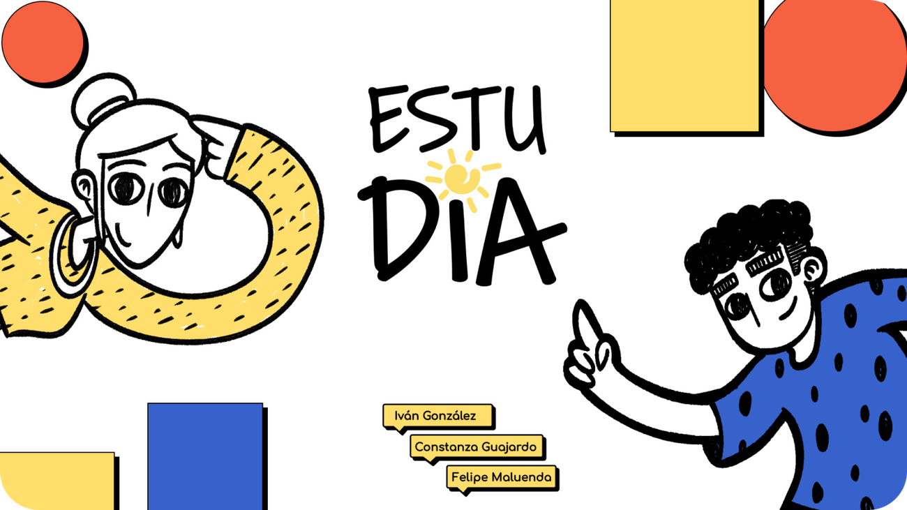
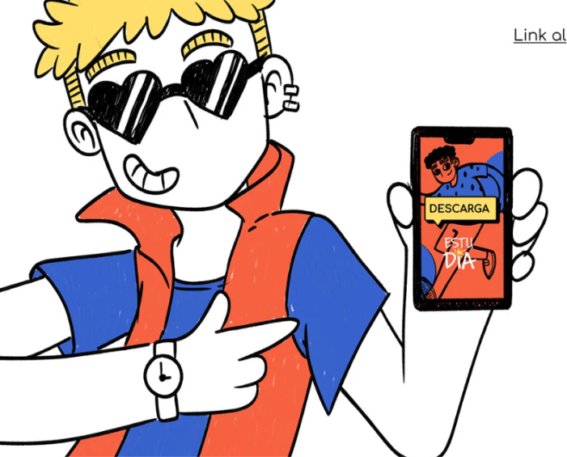
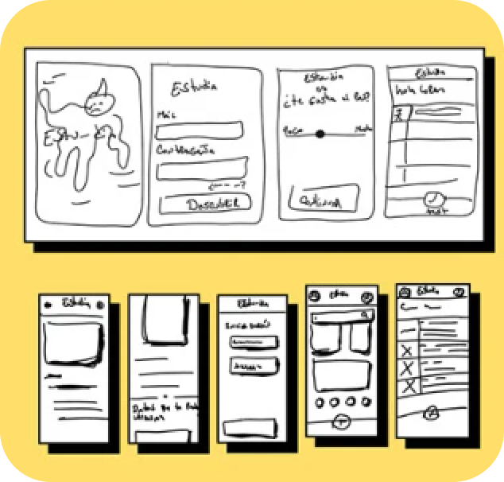
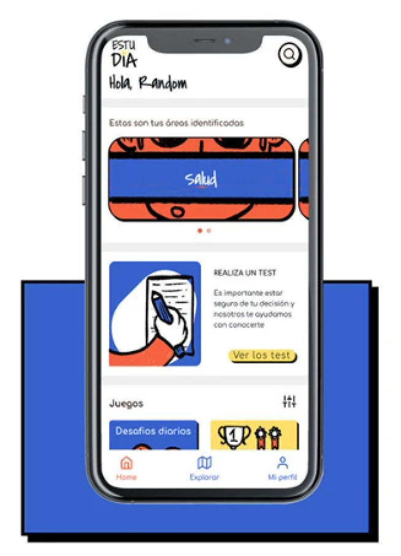

El diseño como guía en la búsqueda

Estu-día es un producto digital diseñado para acompañar a jóvenes en el proceso de elección de una carrera técnica o profesional, ayudándolos a descubrir sus habilidades y conectar con opciones educativas reales según su contexto sociocultural. El proyecto nació dentro del marco del Diplomado en UX, con el propósito de abordar una problemática transversal: la falta de orientación vocacional efectiva en Chile, especialmente entre estudiantes de enseñanza media.

Problemas en el camino
Durante la investigación detectamos una serie de brechas críticas:
- Falta de información vocacional accesible y clara.
- Escasa orientación personalizada por parte de instituciones educativas.
- Decisiones basadas en presión externa o desconocimiento, más que en autoconocimiento.
- Baja motivación y retención en la educación superior producto de una elección mal informada.
Según la encuesta del Programa de Estudios Sociales de la UCV, el 21% de los jóvenes no tiene decidido qué estudiar, y un cuarto de los estudiantes de colegios municipales define su carrera solo después de conocer su puntaje en la PAES.
El desafío
El reto fue diseñar una experiencia que ayudara a los jóvenes a descubrir su vocación de forma cercana, entretenida y significativa, integrando herramientas lúdicas, información útil y orientación real. Además, el producto debía incluir a los docentes como actores clave, permitiéndoles entregar acompañamiento y herramientas pedagógicas para guiar a sus estudiantes.

Proceso de diseño y negociación
- Research y validación de usuarios: Realizamos encuestas y entrevistas tanto a estudiantes (14-25 años) como a profesores, identificando diferencias en el nivel de dominio tecnológico y el uso de herramientas digitales. Se evidenció que los jóvenes usan intensamente redes sociales, pero tienen bajo conocimiento sobre procesos vocacionales, mientras que los profesores poseen conocimiento del sistema, pero escasa familiaridad con la tecnología.
- Definición de personas y empatía: Construimos distintos arquetipos —como Pamela (17), Javier (20), Tomás (18) y José (39)— para representar realidades diversas y entender cómo factores sociales, económicos y emocionales afectan la elección vocacional.
- Ideación y benchmark: Analizamos plataformas como descubretucarrera.pe, identificando buenas prácticas (uso de ilustraciones, lenguaje lúdico, feedback constante) y áreas de mejora (exceso de pasos, navegación confusa).
-
Diseño de experiencia:
- Elaboramos wireframes de baja, media y alta fidelidad.
- Definimos un lenguaje visual basado en el neo-brutalismo, con colores vibrantes y tipografías expresivas (Comfortaa + Covered By Your Grace) para transmitir cercanía y energía juvenil.
- Diseñamos flujos centrados en dos pilares: autodescubrimiento y exploración vocacional, con test progresivos y resultados personalizado
-
Testing y validación:
- Realizamos tests de usabilidad y A/B testing con más de 20 usuarios.
- El 78% prefirió la versión con diseño más limpio y estructura simplificada.
- Los usuarios destacaron la coherencia visual y la claridad del flujo, aunque se ajustaron tipografías, contrastes y jerarquías de contenido según el feedback recibido.

Solución final
El resultado fue un prototipo funcional de una app vocacional gamificada, accesible y pensada para distintos niveles de alfabetización digital.Estu-día integra test vocacionales, información sobre becas, universidades y áreas de interés, presentadas con un lenguaje cercano y visualmente atractivo. Además, propone una relación simbiótica entre jóvenes y docentes, donde ambos acceden a herramientas que fomentan la orientación, el autoconocimiento y la toma de decisiones informadas.
El proyecto logró conectar diseño, empatía y educación, demostrando cómo un producto digital puede disminuir la incertidumbre vocacional y abrir oportunidades de futuro real para cientos de jóvenes.